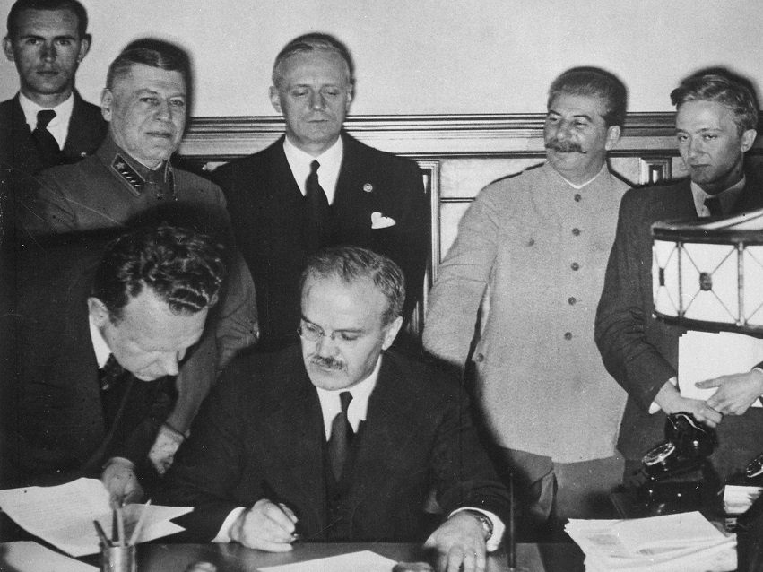
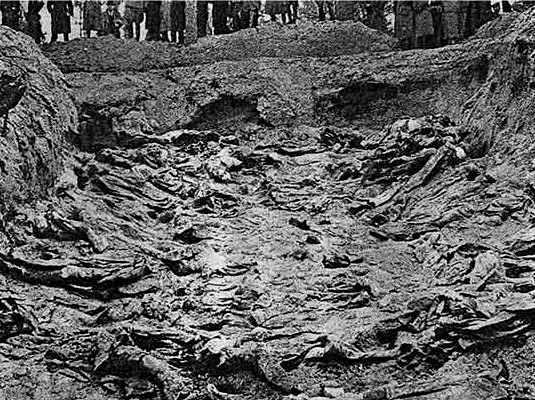
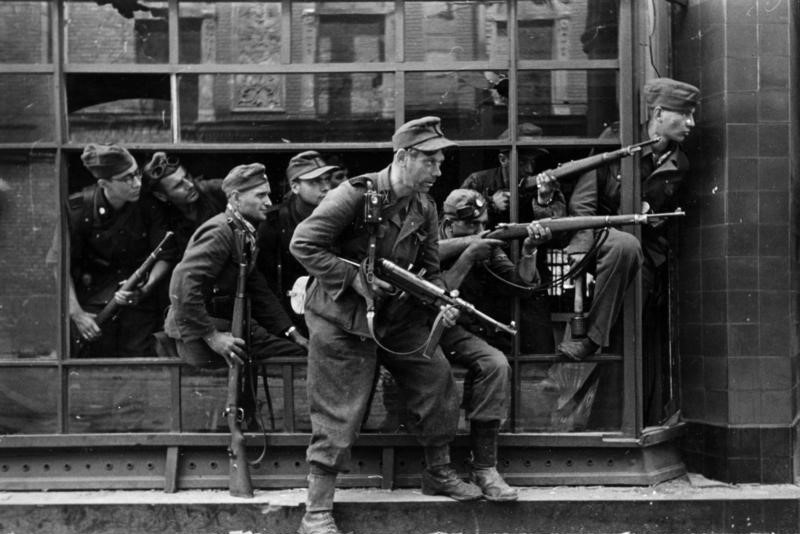
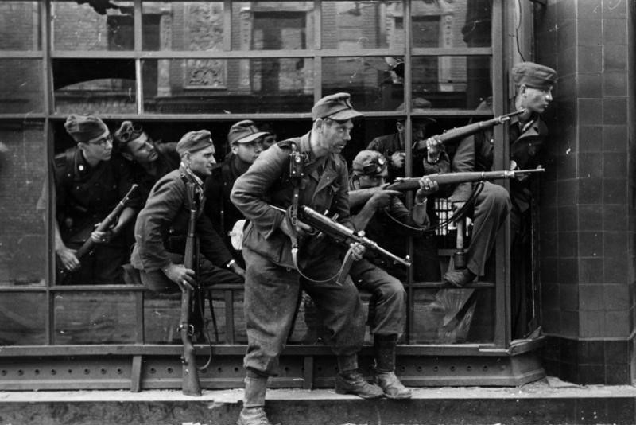

If Poland regained independence 100 years ago,
how come Poles still weren't free?
Prior to 1918 Poland had not existed as a state for almost 130 years.
The Ist World War resulted in the collapse of the old superpowers and Poland came back as an independent state.
But the Poles could not finish rebuilding the country. Ahead of them were decades of occupation and wars against the Bolsheviks, German Nazis and communists - no other country but Poland has always stood on the way of these murderous regimes.
So freedom and independence
do not mean the same thing?
They don't. Just like in case of Poland after the war, you can have a state, a country that is considered sovereign, but in reality it is totally controlled and subordinate to the more powerful and aggressive state, in this case the Soviet Union.
But the worst part is that this control is most often executed by your fellow citizens, people who share the same history and speak the same language. For some reasons they decided to become loyal servants of the oppressive regime.
Is there anything that is different,
or special about Poland?
There isn't, but when you look at the map, it's easier to understand the challenge: Poland is squeezed between two fiercely expantionistic, notorious bullies - Germany and Russia.
Poland has always been the first to help and fight for others, and the last one to collaborate with occupants.
So how did Poland survive as a country
and as a nation?
Barely. Wounded, crippled.
We have been denied our language, culture, beliefs.
The nation's elite were murdered with a shot in the back of the head.
Millions died, hundreds of thousand were put in labor camps, or forced to leave.
The toll that the last 100 years took on the Polish nation is immense.
But one thing that the Poles cannot be denied is their unmatched resilience and
will to fight for what is right.
...that's why we can't forget,
...this is why we march,
...and this is our story.
this is the story we want to tell...
... a story we simply must tell. The story may seem sad, even tragic, yet full of tales of strength of human will, need for truth and dignity, hope, unsurpassed heroism and sacrifice. But there is also plenty of the worst and the darkest side of humanity: treachery, bestiality, cruelty - evil in its purest form. Poles have had and seen it all.
Below you will find a presentation of events that were critical to history of Poland over the last 100 years. It is not an exhaustive historical analysis. It is more of a journey over the past, that, hopefully, will not let us forget and help you understand better who we are and where we are coming from.

deeper into the past

no place for a free country

why we march
deeper into the past
It’s year 1918. The 1st World War is about to end, the old European empires are collapsing, final peace treaties are being signed, and the new order is about to emerge. The post-war chaos brings a favorable moment for the nation that for nearly 5 generations has been erased from the political map of Europe. On November 11th 1918, following the withdrawal of German forces from Warsaw, Marshall Jozef Pilsudski declares Polish sovereignty and Poland’s Second Republic is born.
The future is wide open.
From the ashes
It's not.
1918 ends 123 years of partitions that were imposed by 3 neighbouring superpowers. This tumultuous time has taken a disastrous toll on the Polish nation. Almost 1 million Poles lost their lives during the Ist World War alone, not to mention the loses in countless battles, uprisings and emigration that preceded that war.
The organizational challenges that the freshly formed Polish republic has to face are immense - the economy is ruined, the administration and the army have to be rebuilt entirely .
Yet, two even more sinister forces - the Nazi Germany and Bolshevik Russia are emerging on both borderlines of the country,and will soon millitarily challenge not only the Polish borders, but will also attempt to destroy the entire Europe, and even the world.
As many times before and after, Poland will have to be the first in line to fight them.
break the spirit, break the nation
If one wants to destroy a nation, they first must weaken its spirit and undermine its will to live and fight. The Polish spirit has never been broken. Despite countless efforts to eradicate the Polish language, culture and root out the nation's identity, Poles always responded with unmatched resilience. Even during the times of most severe persecution, the patriotic elite operating in the country or abroad were able to effectively support "the Polish cause", and lift up the nation's spirit. Amongst them were Polish Nobel Prize winners, world renowned writers, poets, painters, musicians and politicians - Fryderyk Chopin, Maria Sklodowska, Ignacy Paderewski, Henryk Sienkiewicz, Adam Mickiewicz, Roman Dmowski, just to name a few. It was this tumultous time that inspired and helped produce the nations' most valuable and significant works of art.
It was Poland that organized the largest resistance movement against the Nazi Germany during the WWII, and it was the Poles that created the largest organized civil resistance movement in Eastern Europe during the communist era in the 1970s-1990s - "Solidarnosc".
If there is one thing Poles should be proud of, it is the fact that they have never, ever given up. The only right thing we can do now is not let this spirit die and not let our children forget. And this is why we march.
-

1920
Battle
of WarsawPoland stops the Bolshevik revolution from spreading to the West. The Polish defence line position near the town of Miłosna.
-

1939
German &
Russian PactThe signing of the Molotov-Ribbentrop Pact with its secret agenda to attack sovereign Poland.
-

1939
Nazi German
InvasionGerman soldiers and custom officials reenact the removal of the Polish border crossing in Sopot on September 1, 1939.
-
1939
German & Russian
InvasionPartners in crime - a German and Soviet officer shaking hands at the end of the Invasion of Poland.
-

1940
Katyn
MassacreBodies of Polish officers and intelligentsia - "enemies of the Soviet authority", murdered in mass executions in Katyn.
-

1945
Anticommunist
OppositionThe show trial of Capt. Witold Pilecki, a "Cursed Soldier", sentenced to death and executed March 1948 - a part of Russia's plan to suppress and eliminate any anti-communist efforts.
-
1944
Warsaw
UprisingThe Polish Home Army soldiers defending a barricade.
-
1981
Marshall
LawGen. W. Jaruzelski, a loyal pro-soviet Polish communist and traitor declares a marshall law in an attempt to crush political opposition.
no place for a free country
There is no room for a truly independent, sovereign countries between Berlin and Moscow - this fact has been expressed many times in the past. In the interest of both of the powers is to eliminate such a country entirely or prevent it from becoming strong and independent by any military and economic means.
Such plans have been deviced or implemented to some extends many times before. Take a look at the timeline below, learn more about the last 100 years of neighbor relations between Poland, Germany and Russia.
When you a look at the map and study the timeline, you might understand better, why what happened in the last 100 years is so important to the Poles and their national identity. Should they leave it behind and forget? Would you? What are the consequences of the fact, that you live between the countries responsible for the worst horrors of the 20th century? Entire nations and millions of people fell victim of hatred, hunger for dominance and imperial ideologies of the 20th century Europe. Unfortunatelly for Poland, we were always literally right in the middle of all of it.
click to see the map

Map of Europe 1918 - 1939
Germany marked in black on the left, Poland in gray, and Russia on the right in red.
GERMAN "MITTELEUROPA PROJECT"
plan of economic expansion drawn
1915
The Mitteleuropa plan was to achieve the economic and cultural hegemony over Central Europe by the German Empire, and subsequent economic and financial exploitation of this region combined with direct annexations, and the creation of puppet states for a buffer between Germany and Russia.
BATTLE OF WARSAW
Poland beats Bolshevik army in an epic battle
1920
RUSSIA & GERMANY sign a secret pact
Poland will be attacked and split in two again
1939

The Molotov–Ribbentrop Pact, also known as the Nazi–Soviet Pact, the German–Soviet Nonaggression Pact secretly delineated the spheres of interest between the two powers, confirmed by the supplementary protocol of the German–Soviet Frontier Treaty amended after the joint invasion of Poland.
GERMANY ATTACKS POLAND from the west
2nd World War starts
1939

RUSSIAN INVASION
Russia attacks from the east
1939
KATYN MASSACRE
Bolsheviks execute 20k Polish military and intellectuals
1940
EXTERMINATION IN CONCENTRATION CAMPS
Nazi Germany carries out plans of "ethnic cleansing"
1940
WARSAW UPRISING
the city that could not take it any longer
1944
END OF THE WAR - JALTA CONFERENCE
Poland left under Russian control
1945
MILLITARY ANTI-COMMUNIST OPPOSITION
Armed partisan underground opposition
1945
ANTI-COMMUNIST OPPOSITION
Organized civil resistance in post-war Poland
1956


Battle of warsaw
Less than two years after the regaining of our independence, a Bolshevik, communist Russia invades Poland. The Red Army is about 120,000 soldiers strong. The goal of the Soviets: to conquer Poland and introduce communism, also in Western Europe. August 13- 25, 1920: a decisive battle takes place in the forefield of Warsaw, the so-called Battle of Warsaw. In the national mythology, the Polish victory is known as the "Miracle on the Vistula.” Western politicians: this is the eighteenth battle in the world history based on its strategic genius. Poland defends its budding independence and saves Europe from the Marxist-communist plague.
Katyn Crime
A treacherous communist crime committed against nearly 22,000 Polish citizens, ordered by the USSR authorities, carried out in the spring of 1940 by the Soviet political police (NKVD). Execution through a shot in the back of the head of 14,500 prisoners of war - officers and police officers - gathered in special camps in Kozielsk, Starobielsk, and Ostashko. 7,300 civilian prisoners arrested in the eastern part of Poland occupied by the USSR (so-called Eastern Borderlands). The aim was to eradicate the patriotic leadership and intellectual elite of Poland to prevent the revival of the Polish statehood. The victims were buried namelessly in collective graves ("death pits") in Katyn near Smolensk, Miednoje near Twer, Piatichatki in the suburbs of Kharkiv, Bykownia near Kiev and other unknown places. The crime discovered in 1943 by the Germans, hidden by Russia, unsettled at the Nuremberg trials, functioned in the Polish consciousness as the so-called "Katyn lie.” It was only in 1992 that Russia recognized it as a crime of Stalinism, and in 2012 the European Court of Human Rights as a war crime committed by the USSR authorities). Today, war cemeteries in Katyń, Kharkiv, and Miednoje - from 2000 and in Bykowo - from 2012.
extermination in Concentration Camps
In occupied Poland in the years 1939 - 1945, the German Nazis set up over 6,000 camps of various nature for civilians (resettlement, forced labor, penal, concentration, extermination camps). Included in this number were 24 concentration camps, with hundreds of sub-camps and subsidiary camps, dozens of resettlement camps and thousands of labor camps. They were the primary instrument of terror and extermination, annihilation of a conquered nation, the destruction and murder/physical elimination of patriots working for the Polish cause and enslaving the rest. The camps became a place of mass, planned extermination of Jews from all over Europe (the Holocaust). The conditions in the camps were inhumane, characterized by inhumane rigors: on top of indefinite imprisonment, systematic terror, torture, beatings, mass executions, standing still for hours during roll call in freezing cold, sadistic mistreatment of prisoners, starvation to death, subjecting prisoners to cruel medical experiments, maximum exploitation of the workforce, slave labor with starving food rations, extremely primitive accommodations and hygienic conditions regardless of illness, age and physical shape. Up until 1942, Polish political prisoners prevailed in these camps; then they were put together with prisoners of a "special" category, designated by the German ‘ubermensch" for extermination under the so-called "final solution to the Jewish question," or the destruction of the Jewish population. There were six extermination camps in Poland: Auschwitz-Birkenau in Oświęcim and Brzezinka, in Chełmno on the Ner River, in Bełżec, Sobibór, Treblinka, and Majdanek. These were the real "death factories" intended for mass murder on an industrial scale. Over 2.5 million people, mainly Jews, were murdered in the concentration camps in Poland. The prisoners were gassed with flue gas or Zyklon B gas in special gas chambers and then burned in crematoria furnaces, which, as the procedure intensified, were expanded so that within one day it was possible to murder up to 9,000. People. At least 1.3 million prisoners including up to 150,000 Poles, 23,000 Roma, 12,000 Soviet prisoners of war, and over 30,000 people of other nationalities were sent to the concentration camp in Auschwitz, the earliest one built (May 1940) and the largest of all. In total, 18 million prisoners and prisoners of war from 30 countries went through the camps established by the Germans in Poland. Today they are remembered and revered as the places of martyrdom and deaths of genocide victims of Nazi Germany. Some, such as the Memorial and Museum Auschwitz-Birkenau, are open to visitors to ensure that the memory never fails and acts a somber warning for present and future generations. The erroneous and simplified phrase "Polish concentration camps,” often appearing as a mental shortcut in the Western European and American literature and media, deserves a firm objection. Justification of such a phrase based on a geographical location of the camps in Poland is unacceptable; such wording may suggest Polish perpetrators, while it is the German Nazis who bear sole responsibility for the martyrdom of millions of innocent victims.
 

Warsaw uprising
The Warsaw Uprising broke out On August 1, 1944, at the initiative of the Home Army command (the Polish underground resistance, loyal to the Polish Government in exile) and lasted 63 days, until October 3, 1944, even though it was originally intended to last for a few days. The aim was to liberate Warsaw from the German occupation before the Red Army entered the capital and to establish a legal Polish government against the imposed and dependent rule of Stalin(PKWN). The Home Army soldiers from virtually all regions of Poland, as well as civilians, took part in the heroic fight. Germans and Soviets on both sides of the front were fighting off the troops moving to help the uprising. Between 16-18,000 Home Army soldiers and 150-180,000 civilians died. After the capitulation, the Germans razed the city of Warsaw. Following the War, the Polish people rebuilt the capital with great collective effort. Even though the uprising suffered a military defeat, it was of great political importance as a demonstration of the indomitable Polish will to regain and maintain independence. It was the uprising of the young: 65% of insurgents were under 25 years old. Women also took part in the uprising, not only as liaison officers, doctors, and paramedics but also in the first line of fight. The entire population of Warsaw supported the insurgents, offering facilities and any necessary help. After 5 years of barbaric occupation, bestiality of Germans, ghastly murders, mass executions, and street roundups, executions, hundreds of random victims and the system of universal terror, the heroism and determination of the insurgents, translated into an imperative: "Warsaw could not not fight!" In fact, the uprising was a struggle for independence of the entire Polish nation and the freedom of all Poles. After the Second World War, the participants of the uprising were treated as enemies and "traitors" of the Polish People's Party. Several uprising leaders were convicted in rigged trials. The memory of the Warsaw Uprising and its participants’ heroism is a permanent and crucial element of the Polish national identity.
Jalta Conference
At a conference in Yalta (held for February 4 to 11, 1945), three states, represented by the Soviet Union's Premier Joseph Stalin, Prime Minister of Great Britain Winston Churchill and the United States President Franklin D. Roosevelt, acknowledged the Russian "supremacy" over Poland ( a Soviet sphere of influence), agreed to the forceful elimination of the Polish armed underground, mainly the Home Army and the National Armed Forces, decided on new borders of the Polish state (loss of the Eastern Borderlands the Soviets had already annexed in 1939; in Potsdam, at the turn of July and August 1945, the western border was extended as "compensation" by the lands that remained under German rule at the time: Lubusz Land, West Pomerania, East Prussia, Silesia, Free State of Danzig), and agreed to have a Provisional Government of National Unity in Poland created to conduct free elections (they were forged). They also declared their lack of support for the temporary Polish authorities hostile to Stalin's interests. These agreements, perceived by the Polish people as a betrayal of national interests, made without Poland’s involvement and consent, and considered to be “another partition of Poland” by the Polish government in exile, subjected our war-ravaged country to the ruthless Soviet regime and the Polish people to enslavement again, for many years to come.
Millitary anti-communist opposition
1944-1945 - the Bolshevik Red Army fights with Germany and occupies entire Poland. In the "liberated" territories, the Polish communists brought back from the Soviet Russia, organize the state administration. A puppet provisional government called the Polish Committee of National Liberation (PKWN) is proclaimed in Lublin, and is entirely subordinated to the Stalinist Russia. In the eastern borderlands of the Commonwealth, the Bolshevik NKVD organizes raids on the Home Army units, which have so far fought against Nazi Germany. 3,500 Poles are killed and 25,000 are arrested in military clashes. Repressions are also imposed on civilians opposed to the Soviets.The armed resistance movement against the imposed communist and the Soviet rule spreads throughout Poland. In 1945, 341 military units, with approximately. 15,000 soldiers fight for the underground 1946 - there are still about 7,500 fighting partisans left. The declining number results from massive military actions on the part of the NKVD, the Polish secret police, and, unfortunately, the "Polish" army (Polish in quotation marks, as the major commanders were mostly Russians). 1947 - the government of the Polish People's Republic declares amnesty. 80,000 people, in various ways related to the opposition, come forward. The amnesty turns out to be a fraudulent trap: harassment, murders, imprisonment and death sentences ensue - such is the grace of the communist authorities. The resistance of the decimated underground continued until 1953. The last partisan was killed in a fight in 1963! Despite huge losses and unfair balance of military power, the record of underground activities was impressive: - several thousand clashes and battles with the NKVD forces, numerous successful ambushes. - 1200 Militia and Public Security offices destroyed - 38 attacks on prisons, release of hundreds of prisoners - physical elimination of several traitors and Public Security officers. Above all, the underground actions manifested loyalty to the idea of Polish independence ,worthy of the highest regard The Communist authorities of the post-war period, and, unfortunately, a number of servile historians, described the insurgents using abusive epithets, referred to them as bandits, traitors, enemies of People's Poland, and accused them of the lack of a sense of realism and senseless romanticism. They anticipated for these heroic Poles to end up on the garbage heap of history. Communism in Poland collapsed in 1989, and the Polish history did not turn out as the Soviet vassals had planned. Today, in free Poland, the memories of the heroes of the anti-communist underground are worshiped and their monuments are erected throughout Poland. They’ve earned the name of the indomitable, cursed soldiers.
civic anti-communist opposition
1945: betrayal of Poland at the Yalta Conference and surrendering Poland to the rule of the Soviet Russia. The Polish communists, controlled by the USSR, devise a plan to eradicate the civic opposition, following the suppression and elimination of the armed underground. 1947: electoral fraud and the establishment of the Polish United Workers’ Party (PZPR), a communist party entirely subordinate to the Soviets. 1948-1953: the Stalinist era, opposition suppressed; ruthless, bloody repression ensues 1956: massive workers protests in Poznań, with “Freedom, Bread, God!" slogans. Bloodily suppressed, several dozen dead. 1968: student demonstrations against censorship of a classic Polish play “Dziady”. The Party makes a decision to suspend the show. 1970: strikes at the Gdansk Shipyard, demand for legalization of trade unions; the government suppresses demonstrations with tanks and machine guns- dozens of defenseless demonstrators are killed 1968-1980: increased opposition activity against the communist government - Workers’ Defence Committee (KOR), Polish Independence Agreement (PPN), (Confederation of Independent Poland) are founded. Forms of action: protest letters, independent publications, Polish underground press (lit. second circulation), self-education movement,seminars, lectures on economics, sociology etc. Objective: presentation of true and objective Polish history. Demands: the right to organize opposition bodies and establish free trade unions, end of censorship, Poland’s independence). 1980: country wide wave of strikes originates in Gdansk, the communist authorities must agree on the postulates of strikers, especially the foundation of the Independent Self-Governing Labor Union “Solidarity” (NSZZ "Solidarność). The court formally allows for “Solidarity’s” existence. The so-called 'Solidarity' carnival follows, with around 10 million people joining the Union. Panic of the authorities, desperate attempts to stop the freedom"tsunami", the communists try to threaten Poles with a military intervention by the USSR. December 13, 1981: Wojciech Jaruzelski, head of the communist party, at the same time prime minister and minister of national defense, declares martial law in Poland. The document, illegally signed by the so-called Military Council of National Salvation, announces the delegalization of "Solidarity" and internment (imprisonment) of the majority of activists, as well as the ban on strikes and assemblies. The communists declare war on the Polish nation !!! Despite drastic restrictions of martial law, a wave of protests and strikes continues throughout Poland.
Marshall Law
On December 13, 1981, the communist government unlawfully introduced martial law in Poland. The "Solidarity" movement failed to be subjugated and to become a part of the “system.” Thus, force was used to crush political opposition, and a war on nation declared. Power was usurped by the Military Council of National Salvation (WRON), led General Jaruzelski and General Kiszczak. Terror and repression set in. Over 10,000 “Solidarity” activists and leaders were interned in 49 camps throughout the country, another 10,000 arrested, 800,000 forced to emigrate. Thousands of people were persecuted and expelled from work. Radio and TV were taken over, a number of institutions and strategic branches of the economy were placed under military management: public transportation, telecommunications, power stations, coal mines, seaports, and major factories. State and airport borders were sealed, telephones disconnected, a curfew was imposed, and mail censorship introduced. Travel throughout the country and abroad was banned. Several associations were delegalized (including Independent Students' Union, Polish Journalists Association, Polish Writers Association), the publication of the majority of press titles was suspended, union and social activities were banned. The "order" was guarded by armed forces and militia, tanks appeared on city streets, heavy battle equipment ready for combat against the Polish citizens. The atmosphere of fear and danger was deliberately escalated by various means. The communist government claimed to have rescued Poland from the military intervention of Soviet Union troops. In the light of archive documents, however, it is known today that the Soviets had no such plan, leaving the crackdown on the nation to Jaruzelski's regime. Social resistance and protest actions were ruthlessly pacified (including in the shipyards of Gdańsk and Szczecin, steel mills in Kraków and Katowice, coal mines in Silesia among others) with the use of weapons. On December 16th, 9 miners were killed in the “Wujek” coal mine, over 300 people were wounded in Gdańsk manifestation, with entire crews fired in retaliation. In total, martial law claimed 100 lives, with 56 people killed during strikes and demonstrations. Thousands of Poles emigrated, including scientists, engineers, doctors, and young people. The drama of millions of Poles, persecuted and cut off from the world, family tragedies and ruined lives, cannot be counted. Formally, martial law was abolished on July 22, 1983. It suppressed the community enthusiasm and the spirit of “Solidarity” for a long time, yet, it did not upend the Polish people freedom aspirations.
Free Elections
Even though the martial law was officially lifted in 1983, it did not bring about a significant change. Repression continued, the economic situation deteriorated drastically (Ronald Reagan’s sanctions), a new wave of strikes swept across the country, frustration was growing, rebellions and protest of various forms were on the rise (countrywide strike alerts, flagging of workplaces, petitions to the authorities). There was a real threat of tension escalating into civil unrest. To maintain power, the communist government made another attempt, this time reaching for a new, more effective solution than the military one from 1981. An agreement was reached with a more conciliatory group of opposition leaders, open to negotiations. Joint negotiations were conducted, regarding a new political system and state model, the so-called “Round Table” talks. The communists hoped to co-opt a part of the opposition into the existing political ruling group without losing control over the tools of power, a decisive say in the most crucial segment of the economy, and also to maintain economic privileges. Consequently, the Polish Republic system was only to be adjusted, not rebuilt. Such actions were aimed to antagonize the opposition, whose radical part did not accept the Round Table Agreement (fraternization) with the communists, without holding them accountable and responsible for the martial law. The negotiations of over 700 participants (communist representatives, a part of the democratic opposition and church leaders), advisors and observers lasted 2 months (from February 6 to April 5, 1989). Officially, the “end of communism” was negotiated, however, without accounting martial law, and in collusion with the Polish United Workers’ Party (PZPR). The rules for “non-confrontational” elections were also established, in which 65% of seats (out of 299), were to be taken by the PZPR communists (with a national elections list containing the most prominent PZPR members), and 35% by non-partisan candidates selected in free elections. As a result of these partly free June elections of 1989 (June 4 and 18), the communists suffered a total defeat and were swept away. Solidarity won all mandates subject to free elections (161 in the Seym and 99 out of 100 in the Senate). However, contrary to this national verdict, some of the “Solidarity” partners of the "Round Table" talks shook hands with the losers and General Wojciech Jaruzelski, the initiator of martial law, was elected president on July 19, 1989. Thus, at the threshold of an independent Poland, the opportunity to assess the guilt and damage of martial law was lost. The beneficiaries of the new agreement remained mostly the PZPR people since they retained influence over economy, media and security intelligence. Banks, state companies and trade centers remained in their hands as well. This ethically questionable compromise, considered by many Poles and the people of Solidarity as a betrayal of the will of the Polish citizens, had a demoralizing effect on the atmosphere of public life in Poland in the years to come. Its effect was impunity for those responsible for evil, lack of de-communization and lustration. The guilty did not bear any responsibility, and the victims did not receive rehabilitation and justice they deserved. Gradually, however, the process of rejection of this disastrous legacy has and is progressing.
Access to the European Union
On May 5, 2004, after a positive majority vote of the European Parliament, Poland entered the European Union. Pros of the concession: Abolition of borders between the EU countries (visa-free travel), Elimination of customs duties Opening up of labor markets Financial resources granted to Poland to reduce the civilization gap in relation to the “Old Union” countries. Funds allocated for the construction of highways, roads, bridges, sewage treatment plants, etc. Cons of the concession: Rising unemployment due to the collapse and sale of several Polish factories Economic emigration to the West, especially to Great Britain, Ireland, and Germany Poland “loses” approximately 2 million young, often highly educated citizens (nurses, doctors) Polish economy largely dominated by foreign capital (western production and trade behemoths destroy the native economy) Ruthless exploitation of Polish employees (on average, 4-fold lower pay than in respective western companies) Huge profits of western companies transferred out of Poland European Union financial subsidies entail a massive increase in domestic and foreign debt; the EU investment subsidies require co-funding by the Polish local governments, which, in turn, take out loans for this purpose Administrative load to allocate the funds significantly increases bureaucracy EU legal regulations, included in the treaties that Poland was required to sign, bring about a significant decrease in our state sovereignty. Economically and politically powerful countries such as Germany and Poland treat Poland as a neo-colonial loot that can be ruthlessly exploited. Bottom line: Unquestionable advantages of Poland accession to the European Union came at very high political and economic costs. Hopefully, the current Polish government will uphold our national interests.
"The Unconquered"
Watch the history in a nutshell


THIS IS WHY WE MARCH
It's been 100 years since Poland regained independence. For better part of this period Poles were deprived of most basic rights that free men in a free world had. Since the collapse of the Eastern Block in 1989 we've regained many of those liberties and we've been exercising most of these rights vigorously.
However, we are not free from the legacy of all those years of communistic regime - regime which primary goal was and still is to form a helpless man without free will and without purpose. It takes a lot of time to rebuild our world and ourselves, and we believe that one cannot shape their future without knowing and understanding the past. And this is why we march, this is why we cannot forget.
Do you think that mainstream media present
Marsz Niepodleglosci in an objective way?
Unfortunately, majority of the reports about the Polish March of Independence and the Independence Day in Poland are extremely partial and simply don't tell the truth about what and why happens in Poland on that day. Given all that Poles had to get through in the last 100 years, presenting the celebration and the march as a demonstration of "fascists" and even "neo-nazis" is disrespectful and insulting.
It is sad and grossly unfair to deny us the right to express our patriotism in this well organized, safe and peacefull march.
What is the reason for the media's apparent bias against "Marsz Niepoldleglosci" - the March for Independence?
The March attracts a lot of people who understand what the country had to go through, share many of the traditional values and see a lot of sense in promoting values that, generally speaking, respect and promote strong and healthy family, tradition, conservative views. What is wrong with wishing your country and your fellow citizens fare well? It's not hard to notice that these values are not popular, and often even openly rejected by the mainstream media, so is our March.